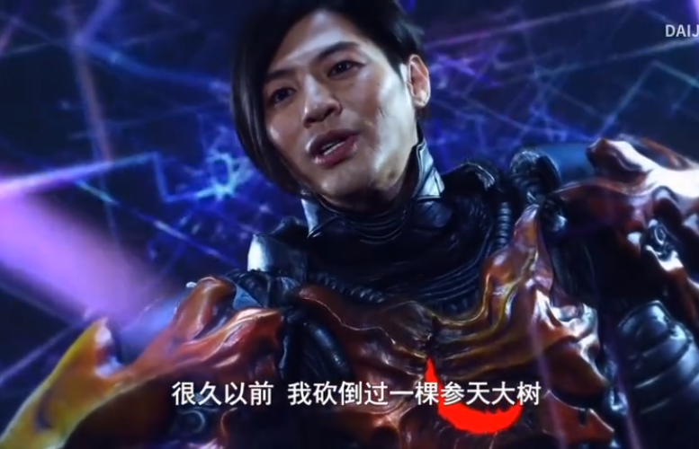
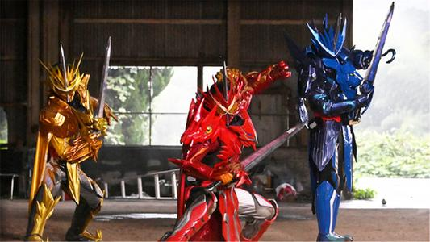
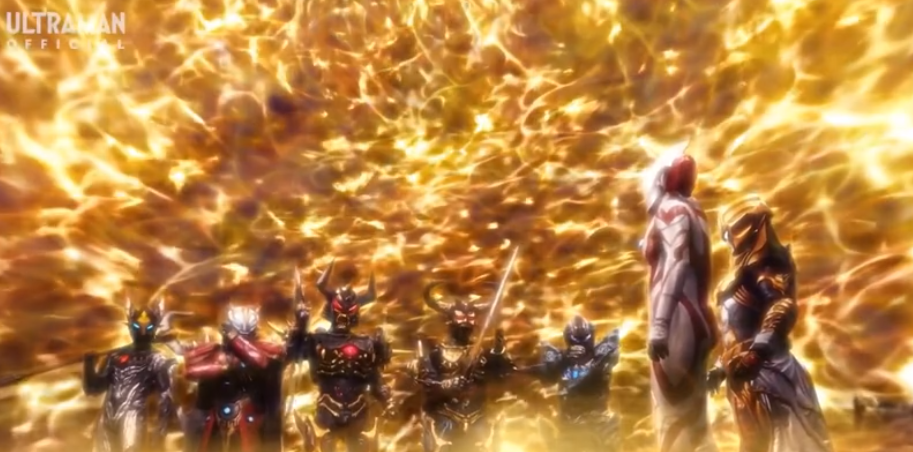

类别
最近的文章
泽塔26集更新《走向灭亡的游戏~~》
 伽古拉终于在遥辉面前揭开了真面目，然后开始了最后的计划。各自的目的都暴露了，事态向最坏的方向发展！ 伽古拉竟然斗气到现在（😀）
在绝望的影子悄悄靠近的时候，噩梦具体化了的最后的敌人出现了！
观看链接 13 Dec 2020 . 10:00
Saber13集更新《我认定的事 就会贯彻到底！》
 贤人为了了解15年前的真相，向王剑发起了最后的绝命攻击，但是在王剑的强大攻击下，终于彻底倒下了。 另一方面街道上已经亮起了五个光柱了，恢复了记忆的飞羽真表示如果六个光柱全部亮起来的话， 奇幻世界将会和现实世界彻底连接起来，就完全无法挽回了。
观看链接 12 Dec 2020 . 12:34
奥特银河格斗2 巨大阴谋 第四话
 本集中着重描写了贝利亚与奥特之父的爱恨情仇（😀）。 贝利亚追求力量的原因，以及历史改变的契机。新生代们即将被抹除？ 塔尔塔洛斯发现三角恋情，有机可乘？奥特大战争开幕！
观看链接 11 Dec 2020 . 08:56